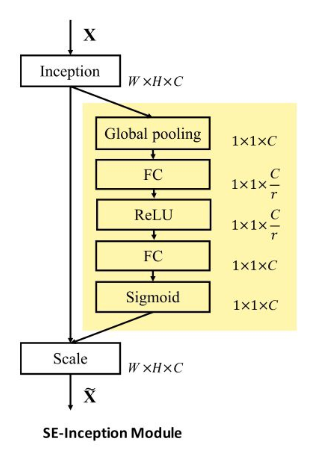

Attention (AI)
Attention is the ability to focus on different parts of the input, according to the requirements of the problem being solved. Attention mechanisms can be implemented as gating functions. LSTMs ' forget map and input map are a form of attention.
SE layers
SE (squeeze and excitation) layers are another example of attention: they allow focusing on particular channels in a dinamical way, according to the input under consideration. 
The most typical attention layer is based on the key-value paradigm, implementing a sort of associative memory. We access this memory with queries to be matched with keys. The resulting scores generate a boolean map that is used to weight values.